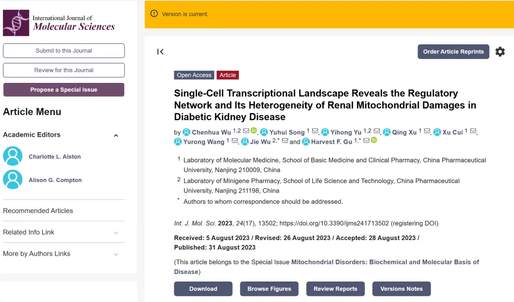
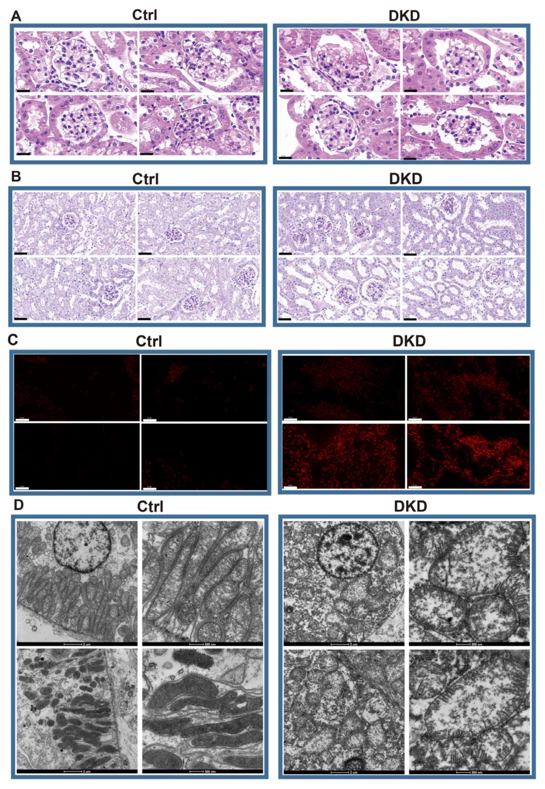
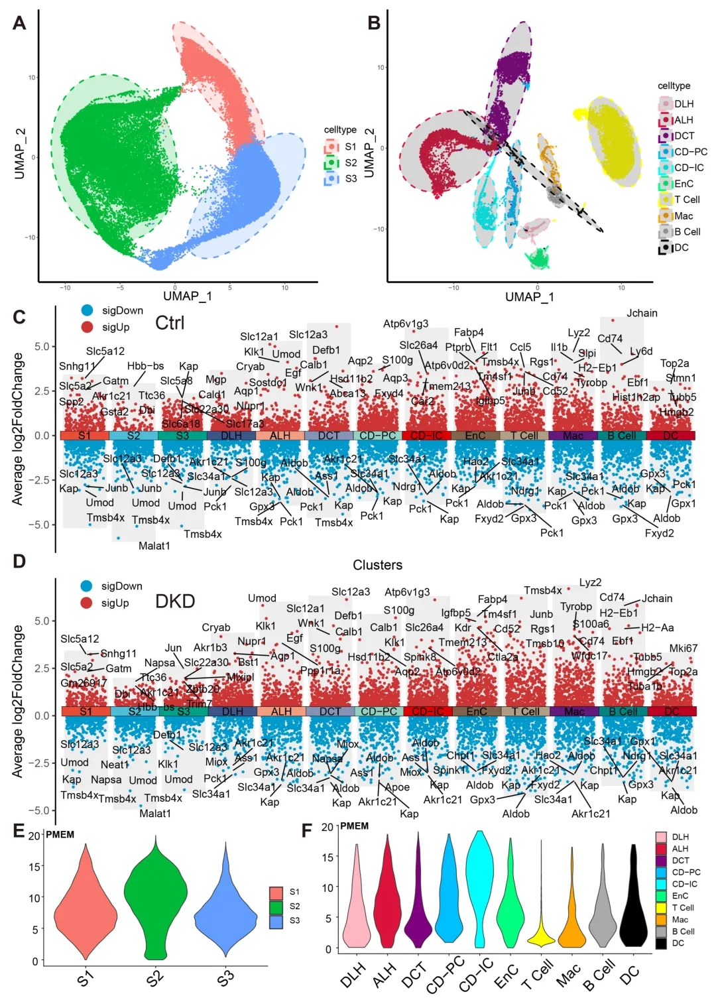
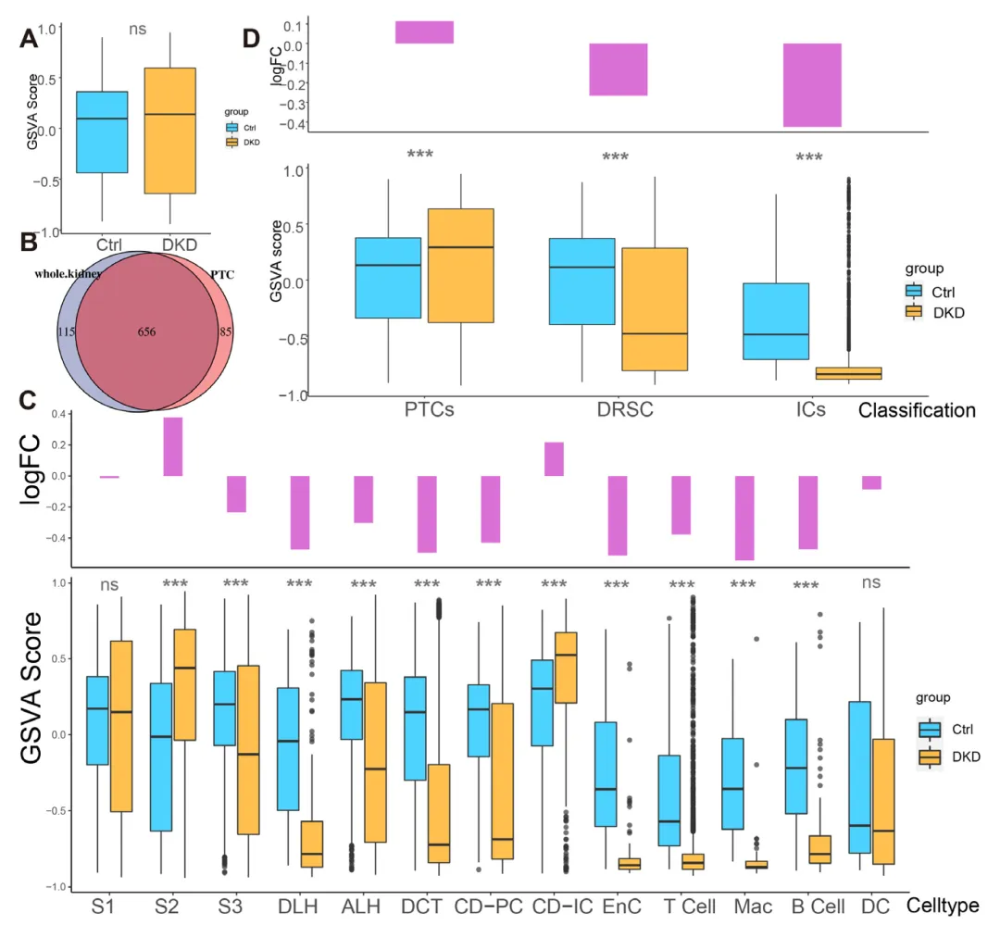
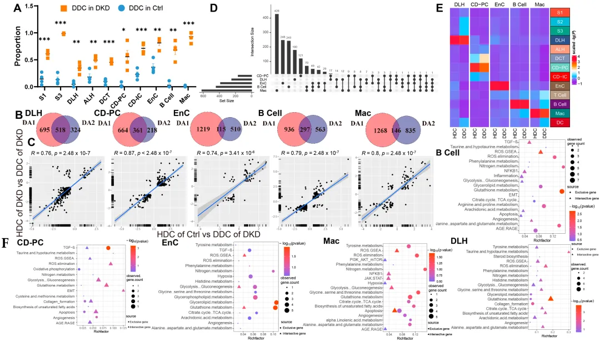
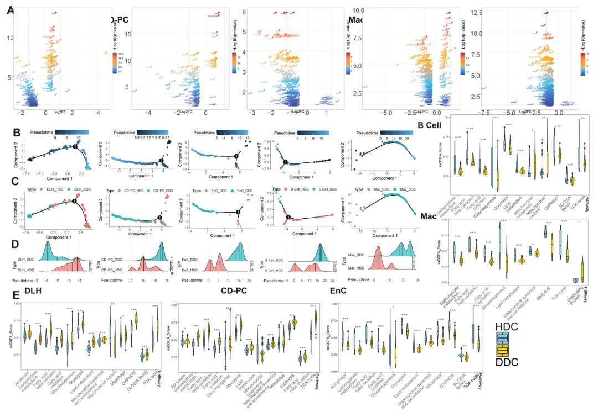
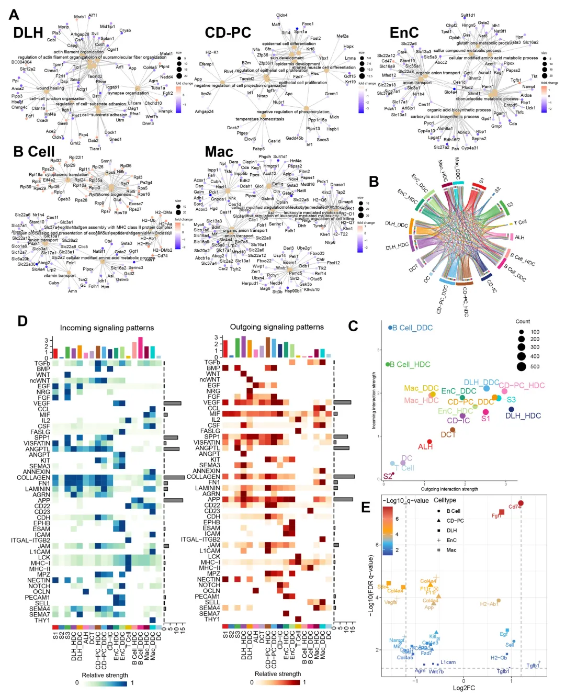
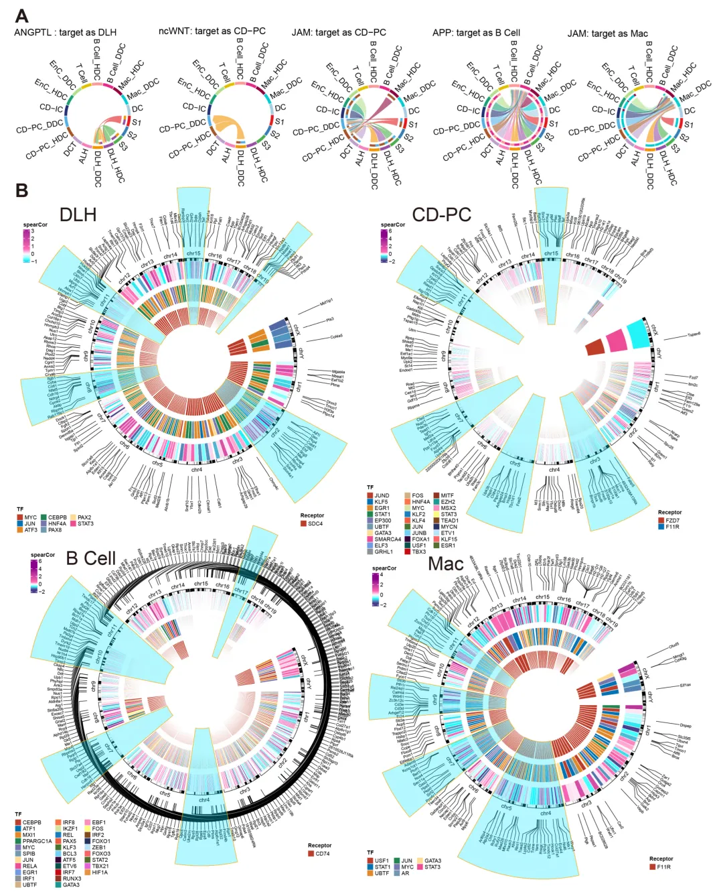
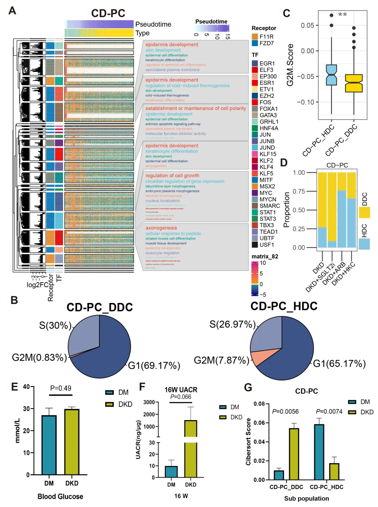

单细胞线粒体分析套路
原文：https://mp.weixin.qq.com/s?__biz=MzAwMzIzOTk5OQ==&mid=2247529840&idx=2&sn=5699b13d8703027edbcfb6ea8cdc6373&chksm=9b3c0c20ac4b85364dcc356d470869410eff467bf96a9ffbcc4f9017994e11a7193a4fe52b48#rd 合集：文献速递
写在前面
今天分享的是一篇发表在《International Journal of Molecular Sciences》(IF=5.6,Q1)上题为"Single-Cell Transcriptional Landscape Reveals the Regulatory Network and Its Heterogeneity of Renal Mitochondrial Damages in Diabetic Kidney Disease"的文章。这篇文章算是几乎没有实验内容，主要靠单细胞数据分析思路 立足。众所周知，线粒体一共只包含13种mRNA，且线粒体RNA 通常被视为单细胞转录组数据中的"噪声 "，那作者又是如何化腐朽为神奇完成这篇文章的呢。本推送带大家简单过一遍该文主体内容，后续考虑出一些代码教程。
该文虽然研究的是diabetic kidney disease (DKD)，但其巧妙的借用了肿瘤研究中常用的思路(类似于肿瘤组织与癌旁组织的比较)，作者通过对DKD肾脏细胞的非监督式聚类，鉴别出了处于健康状态 下的细胞与处于DKD患病 状态下的细胞两类亚群 ，从而开展后续的基因集评分、细胞通讯、拟时序分析、转录因子预测、联合bulk RNA-Seq去卷积等操作。

主要内容
首先，作者通过各类染色方法确定了DKD进程中的病理性变化 与线粒体结构、功能损伤 存在关联(Figure 1)，为下文的数据分析作序。

Figure 1接下来就是大家熟悉的单细胞数据处理过程(从scRNA-seq小白到文献复现大神！)，经预处理、降维分群后作者共鉴定出了13种肾脏细胞类型并完成了它们的marker基因 与线粒体mRNA 表达百分比展示(Figure 2)。

Figure 2接下来作者通过对GSVA分析(单细胞中应该如何做GSVA？)结果在肾脏整体水平(Figure 3A)、细胞类型水平(Figure 3C)与细胞分类水平这三个水平 上的组间差异分析，充分证明了线粒体的组间差异具有细胞异质性 ，证明了bulk水平上的差异分析会被组织器官中的主要细胞类型所覆盖(这里为PTC)，这部分内容证明了bulk水平的差异分析是无意义的(Figure 3B)。算是证明了一波单细胞测序的价值所在。

Figure 3接下来的Figure 3便是本文的精髓，作者通过对线粒体相关核基因(除线粒体自编码的13种mRNA外，细胞核中还存在1140个与线粒体相关的编码基因)GSVA矩阵的非监督式聚类，分离出了DKD-dominant cluster(DDC)与health-dominant cluster(HDC)，且DDC在模型组的含量要显著高于Ctrl组(Figure 4A)。为进一步验证这一假设的可靠性，作者对DDC、HDC及它们对应的原始细胞类型做了相关性分析，证明它们的基因表达矩阵均与原始细胞类型类似，即DDC与HDC并不是分群错误 带来的产物。而DDC与HDC之间的差异基因与模型组与对照组间的差异基因基本一致(Figure 4C)，这进一步证明了模型组的内部真的存在疾病类群与健康类群 ！那么DDC与HDC所特有的差异基因(Figure 4B蓝色部分)即为一片新大陆 ！

Figure 4在针对DDC与HDC间独有 的差异基因分析中，无论是火山图、拟时序分析还是ssGSEA分析(一文搞定单细胞基因集评分)中，均展示出了明显的差异，证明这些基因集对细胞状态产生了显著的生物学影响。

Figure 5为进一步探索这些独有基因对细胞产生的生物学影响，作者通过单细胞分析的传统艺能——细胞通讯(一文学会四种scRNA-seq细胞通讯分析)展开了分析，并抓取了其中包含DDC与HDC特有差异基因 的细胞通讯通路 。

Figure 6显然，仅凭细胞通讯的配受体预测分析并不能揭示细胞内部发生的生物学效应，因此作者通过转录因子 预测分析(SCENIC单细胞转录因子调控预测)找到了由细胞通讯引起的包内转录事件变化(Figure 7B)。

Figure 7最后，作者通过对regulon 的富集分析(Figure 8A)以及HDC与DDC之前的细胞周期预测 ，发现了CD-PC的HDC较DDC而言活跃的G2M期细胞占比更多(Figure 8B)。更重要的是，HDC与DDC之间的组间比例差异能够在bulk RNA-seq的去卷积 结果中被重现(Figure 8G)，提升了这一发现的延伸性(如果有临床样本就更好了)。

Figure 8
如何联系我们

 留一个领取资料、开箱即用的单细胞分析镜像的微信号[Biomamba_zhushou]，方便各位随时交流。同时我们也构建了交流群矩阵，欢迎大家入群讨论。
大家可以阅读完这几篇之后添加给生信入门初学者的小贴士
没有检索，就没有发言权
留一个领取资料、开箱即用的单细胞分析镜像的微信号[Biomamba_zhushou]，方便各位随时交流。同时我们也构建了交流群矩阵，欢迎大家入群讨论。
大家可以阅读完这几篇之后添加给生信入门初学者的小贴士
没有检索，就没有发言权
已有生信基地联系方式的同学无需重复添加

 您点的每个赞和在看，我都认真当成了喜欢
您点的每个赞和在看，我都认真当成了喜欢